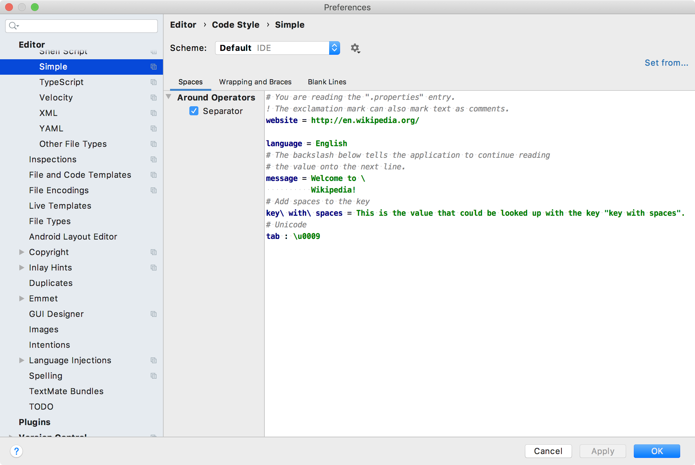

16. Code Style Setting
Code style settings enable defining formatting options. A code style settings provider creates an instance of the settings and also creates an options page in settings/preferences. This example creates a settings/preferences page that uses the default language code style settings, customized by a language code style settings provider.
- 16.1. Define Code Style Settings
- 16.2. Define Code Style Settings Provider
- 16.3. Register the Code Style Settings Provider
- 16.4. Define the Language Code Style Settings Provider
- 16.5. Register the Language Code Style Settings Provider
- 16.6. Run the project
16.1. Define Code Style Settings
Define a code style settings for Simple Language by subclassing CustomCodeStyleSettings.
// Copyright 2000-2020 JetBrains s.r.o. and other contributors. Use of this source code is governed by the Apache 2.0 license that can be found in the LICENSE file.
package org.intellij.sdk.language;
import com.intellij.psi.codeStyle.*;
public class SimpleCodeStyleSettings extends CustomCodeStyleSettings {
public SimpleCodeStyleSettings(CodeStyleSettings settings) {
super("SimpleCodeStyleSettings", settings);
}
}
16.2. Define Code Style Settings Provider
The code style settings provider gives the IntelliJ Platform a standard way to instantiate CustomCodeStyleSettings for the Simple Language.
Define a code style settings provider for Simple Language by subclassing CodeStyleSettingsProvider.
// Copyright 2000-2020 JetBrains s.r.o. and other contributors. Use of this source code is governed by the Apache 2.0 license that can be found in the LICENSE file.
package org.intellij.sdk.language;
import com.intellij.application.options.*;
import com.intellij.psi.codeStyle.*;
import org.jetbrains.annotations.*;
public class SimpleCodeStyleSettingsProvider extends CodeStyleSettingsProvider {
@Override
public CustomCodeStyleSettings createCustomSettings(CodeStyleSettings settings) {
return new SimpleCodeStyleSettings(settings);
}
@Nullable
@Override
public String getConfigurableDisplayName() {
return "Simple";
}
@NotNull
public CodeStyleConfigurable createConfigurable(@NotNull CodeStyleSettings settings, @NotNull CodeStyleSettings modelSettings) {
return new CodeStyleAbstractConfigurable(settings, modelSettings, this.getConfigurableDisplayName()) {
@Override
protected CodeStyleAbstractPanel createPanel(CodeStyleSettings settings) {
return new SimpleCodeStyleMainPanel(getCurrentSettings(), settings);
}
};
}
private static class SimpleCodeStyleMainPanel extends TabbedLanguageCodeStylePanel {
public SimpleCodeStyleMainPanel(CodeStyleSettings currentSettings, CodeStyleSettings settings) {
super(SimpleLanguage.INSTANCE, currentSettings, settings);
}
}
}
16.3. Register the Code Style Settings Provider
The SimpleCodeStyleSettingsProvider implementation is registered with the IntelliJ Platform in the plugin configuration file using the com.intellij.codeStyleSettingsProvider extension point.
<extensions defaultExtensionNs="com.intellij">
<codeStyleSettingsProvider implementation="org.intellij.sdk.language.SimpleCodeStyleSettingsProvider"/>
</extensions>
16.4. Define the Language Code Style Settings Provider
Define a code style settings provider for Simple Language by subclassing LanguageCodeStyleSettingsProvider, which provides common code style settings for a specific language.
// Copyright 2000-2020 JetBrains s.r.o. and other contributors. Use of this source code is governed by the Apache 2.0 license that can be found in the LICENSE file.
package org.intellij.sdk.language;
import com.intellij.lang.Language;
import com.intellij.psi.codeStyle.*;
import org.jetbrains.annotations.NotNull;
public class SimpleLanguageCodeStyleSettingsProvider extends LanguageCodeStyleSettingsProvider {
@NotNull
@Override
public Language getLanguage() {
return SimpleLanguage.INSTANCE;
}
@Override
public void customizeSettings(@NotNull CodeStyleSettingsCustomizable consumer, @NotNull SettingsType settingsType) {
if (settingsType == SettingsType.SPACING_SETTINGS) {
consumer.showStandardOptions("SPACE_AROUND_ASSIGNMENT_OPERATORS");
consumer.renameStandardOption("SPACE_AROUND_ASSIGNMENT_OPERATORS", "Separator");
} else if (settingsType == SettingsType.BLANK_LINES_SETTINGS) {
consumer.showStandardOptions("KEEP_BLANK_LINES_IN_CODE");
}
}
@Override
public String getCodeSample(@NotNull SettingsType settingsType) {
return "# You are reading the \".properties\" entry.\n" +
"! The exclamation mark can also mark text as comments.\n" +
"website = http://en.wikipedia.org/\n" +
"\n" +
"language = English\n" +
"# The backslash below tells the application to continue reading\n" +
"# the value onto the next line.\n" +
"message = Welcome to \\\n" +
" Wikipedia!\n" +
"# Add spaces to the key\n" +
"key\\ with\\ spaces = This is the value that could be looked up with the key \"key with spaces\".\n" +
"# Unicode\n" +
"tab : \\u0009";
}
}
16.5. Register the Language Code Style Settings Provider
The SimpleLanguageCodeStyleSettingsProvider implementation is registered with the IntelliJ Platform in the plugin configuration file using the com.intellij.langCodeStyleSettingsProvider extension point.
<extensions defaultExtensionNs="com.intellij">
<langCodeStyleSettingsProvider
implementation="org.intellij.sdk.language.SimpleLanguageCodeStyleSettingsProvider"/>
</extensions>
16.6. Run the project
In the IDE Development Instance, open the Simple Language code formatting page: Preferences/Settings | Editor | Code Style | Simple.
